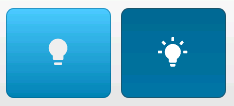
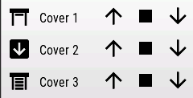
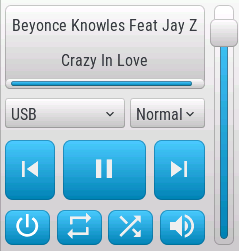

Display clock and temperature~

The easiest example is to display the state of a clock and a temperature sensor from Home Assistant, using label objects in openHASP.
Create a label object to display the temperature value, a separate label object to display the unit and a third label object for the clock:
{"page":0,"id":4,"obj":"label","x":175,"y":5,"h":30,"w":45,"text":"00.0","align":2,"bg_color":"#2C3E50","text_color":"#FFFFFF"}
{"page":0,"id":5,"obj":"label","x":220,"y":5,"h":30,"w":45,"text":"°C","align":0,"bg_color":"#2C3E50","text_color":"#FFFFFF"}
{"page":0,"id":6,"obj":"label","x":3,"y":5,"h":30,"w":62,"text":"00:00","align":0,"bg_color":"#2C3E50","text_color":"#FFFFFF"}
In component configuration all you need for the objects is:
objects:
- obj: "p0b4"
properties:
"text": "{{ states('sensor.my_room_temperature') }}"
- obj: "p0b6"
properties:
"text": "{{ states('sensor.time') }}"
Note:~
You can of course omit the second label object with the unit and use the same for both value and unit:
{"page":0,"id":4,"obj":"label","x":175,"y":5,"h":30,"w":62,"text":"00.0°C","align":2,"bg_color":"#2C3E50","text_color":"#FFFFFF"}
{"page":0,"id":6,"obj":"label","x":3,"y":5,"h":30,"w":62,"text":"00:00","align":0,"bg_color":"#2C3E50","text_color":"#FFFFFF"}
In component configuration you will add the unit to the value using the template:
objects:
- obj: "p0b4"
properties:
"text": "{{ states('sensor.my_room_temperature') }}°C"
All these being on page 0 means that they will appear on all the pages.
Some basic controls~
Jsonl and Home Assistant configuration:
Toggle a light (or any switchable entity with on/off states)~

{"page":1,"id":2,"obj":"btn","x":10,"y":40,"w":105,"h":90,"toggle":true,"text":"\uE335","text_font":28,"align":1}
- obj: "p1b2" # switch, checkbox or btn with toggle true
properties:
"val": '{{ 1 if is_state("light.my_lamp", "on") else 0 }}'
"text": '{{ "\uE6E8" if is_state("light.my_lamp", "on") else "\uE335" | e }}'
event:
"down":
- service: homeassistant.toggle
entity_id: "light.my_lamp"
Dropdown (self-populating from an input_select)~
{"page":1,"id":3,"obj":"dropdown","x":5,"y":40,"w":230,"h":30,"options":""}
- obj: "p1b3" # dropdown
properties:
"options": >
{% if not (is_state('input_select.my_dropdown_selections','unavailable')) %}{%for item in state_attr('input_select.my_dropdown_selections','options')%}{{item+"\n"|e}}{%-if not loop.last%}{%-endif%}{%-endfor%}{% endif %}
"val": >
{% if not (is_state('input_select.my_dropdown_selections','unavailable')) %}{%for item in state_attr('input_select.my_dropdown_selections','options')%}
{{loop.index -1 if item == states('input_select.my_dropdown_selections') }}
{%-endfor%}{% endif %}
event:
"changed":
- service: input_select.select_option
data:
entity_id: input_select.my_dropdown_selections
option: "{{ text }}"
See the other examples for pairing different kinds of objects to different kinds of Home Assistant entities.
RGB light color~

Have an RGB light in Home Assistant controlled by hasp-lvgl. In our example we use Lanbon L8's moodlight.
relevant openHASP config:
{"page":1,"id":4,"obj":"cpicker","x":20,"y":70,"w":200,"h":200}`
relevant openHASP-custom-component config:
- obj: "p1b4" # color picker
properties:
"color": >
{% if is_state('light.openhasp_lanbon_test_moodlight','on') %}
{% set rgb = state_attr('light.openhasp_lanbon_test_moodlight','rgb_color') %}
{{ "#%02x%02x%02x" | format(rgb[0],rgb[1],rgb[2]) }}
{% endif %}
event:
"up":
- service: light.turn_on
data:
entity_id: light.openhasp_lanbon_test_moodlight
rgb_color: "[{{ r }},{{ g }},{{ b }}]"
The color property gets updated from the rgb_color attriburte of light.openhasp_lanbon_test_moodlight. The R, G and B decimal color values are converted to hexadecimal html color code using a template whenever the color of the light changes in Home Assistant.
Whenever somebody changes the color of the cpicker object on the plate, the light in Home Assustant gets updated with rgb_color values received in the MQTT message.
Generic thermostat/climate~

Arc can be dragged by the handle, precise set possible from the +/-buttons. Note that the min, max and val values of the arc are multiplied and divided by 10 when set and read, because LVGL only suppports integers for object values. By multiplying and dividing by 10, it becomes possible to set decimal values for climate temperature.
The objects self-populate with the supported attributes of the climate in Home Assistant: - the arc min and max get the min and max temperatures - the dropdown gets the available heating modes, and changes accordingly during operation - the plus and minus buttons increase and decrease the temperature by the temperature step defined by the climate
The circle in the middle changes color if it's heating, but also serves as a touch-catcher to minimize false arc-touch detections while manipulating with plus and minus buttons. Controls get disabled when entity is unavailable in HA.
relevant openHASP config: (screen size 240x320)
{"page":2,"id":2,"obj":"arc","x":10,"y":70,"w":220,"h":220,"min":180,"max":250,"border_side":0,"type":0,"rotation":0,"start_angle":135,"end_angle":45,"start_angle1":135,"end_angle1":45,"value_font":28,"value_color":"#2C3E50","adjustable":"true"}
{"page":2,"id":3,"obj":"obj","x":40,"y":100,"w":160,"h":160,"radius":100,"opacity":100,"border_opa":160,"border_width":4,"comment":"touch-catcher"}
{"page":2,"id":4,"obj":"label","x":10,"y":40,"w":220,"h":30,"text":"Kívánt hőmérséklet:","align":1,"padh":50}
{"page":2,"id":5,"obj":"dropdown","x":75,"y":235,"w":90,"h":30,"options":""}
{"page":2,"id":6,"obj":"btn","x":50,"y":160,"w":40,"h":40,"toggle":false,"text":"\uE374","text_font":28,"align":1}
{"page":2,"id":7,"obj":"btn","x":150,"y":160,"w":40,"h":40,"toggle":false,"text":"\uE415","text_font":28,"align":1}
{"page":2,"id":8,"obj":"label","x":60,"y":115,"w":120,"h":30,"text":"Status","align":1,"padh":50}
relevant openHASP-custom-component config:
- obj: "p2b2" # arc
properties:
"val": "{{ state_attr('climate.thermostat_1','temperature') * 10 | int if not (is_state('climate.thermostat_1','unavailable')) }}"
"value_str": "{{ state_attr('climate.thermostat_1','temperature') if not (is_state('climate.thermostat_1','unavailable')) }}"
"min": "{{ state_attr('climate.thermostat_1','min_temp') * 10 | int if not (is_state('climate.thermostat_1','unavailable')) }}"
"max": "{{ state_attr('climate.thermostat_1','max_temp') * 10 | int if not (is_state('climate.thermostat_1','unavailable')) }}"
"opacity": "{{ 60 if (is_state('climate.thermostat_1','unavailable') or is_state('climate.thermostat_1','unknown')) else 255 }}"
"click": "{{ 'false' if (is_state('climate.thermostat_1','unavailable') or is_state('climate.thermostat_1','unknown')) else 'true' }}"
event:
"changed":
- service: climate.set_temperature
data:
entity_id: climate.thermostat_1
temperature: "{{ val | int / 10 }}"
"up":
- service: climate.set_temperature
data:
entity_id: climate.thermostat_1
temperature: "{{ val | int / 10 }}"
- obj: "p2b5" # dropdown with modes
properties:
"options": >
{% if not (is_state('climate.thermostat_1','unavailable')) %}{%for mode in state_attr('climate.thermostat_1','hvac_modes')%}{{mode+"\n"|e}}{%-if not loop.last%}{%-endif%}{%-endfor%}{% endif %}
"val": >
{% if not (is_state('climate.thermostat_1','unavailable')) %}{%for mode in state_attr('climate.thermostat_1','hvac_modes')%}
{{loop.index -1 if mode == states('climate.thermostat_1') }}
{%-endfor%}{% endif %}
event:
"changed":
- service: climate.set_hvac_mode
data:
entity_id: climate.thermostat_1
hvac_mode: "{{ text }}"
- obj: "p2b6" # plus
properties:
"opacity": "{{ 60 if (is_state('climate.thermostat_1','unavailable') or is_state('climate.thermostat_1','unknown')) else 255 }}"
"click": "{{ 'false' if (is_state('climate.thermostat_1','unavailable') or is_state('climate.thermostat_1','unknown')) else 'true' }}"
event:
"down":
- service: climate.set_temperature
data:
entity_id: climate.thermostat_1
temperature: "{{ state_attr('climate.thermostat_1','temperature') - state_attr('climate.thermostat_1','target_temp_step') | float}}"
- obj: "p2b7" # minus
properties:
"opacity": "{{ 60 if (is_state('climate.thermostat_1','unavailable') or is_state('climate.thermostat_1','unknown')) else 255 }}"
"click": "{{ 'false' if (is_state('climate.thermostat_1','unavailable') or is_state('climate.thermostat_1','unknown')) else 'true' }}"
event:
"down":
- service: climate.set_temperature
data:
entity_id: climate.thermostat_1
temperature: "{{ state_attr('climate.thermostat_1','temperature') + state_attr('climate.thermostat_1','target_temp_step') | float}}"
- obj: "p2b8" # status label
properties:
"text": "{{ state_attr('climate.thermostat_1','hvac_action') }}"
- obj: "p2b3" # color circle touch-catcher
properties:
"border_color": "{{ 'Blush' if is_state_attr('climate.thermostat_1', 'hvac_action', 'heating') else 'Silver' }}"
- obj: "p2b4" # top label
properties:
"text": "Desired temperature: {{ state_attr('climate.thermostat_1','temperature') if not (is_state('climate.thermostat_1','unavailable')) }}°C"
Cover with state feedback~

The icon on the up and down buttons change color when covers move and set opacity when reached to limit. UI theme set to Hasp Light in plate's web interface.
relevant openHASP config: (screen size 240x320)
{"page":1,"id":4,"obj":"btn","x":5,"y":140,"w":73,"h":60,"toggle":false,"text":"\uE05D","text_font":28}
{"page":1,"id":5,"obj":"btn","x":83,"y":140,"w":73,"h":60,"toggle":false,"text":"\uE4DB","text_font":28}
{"page":1,"id":6,"obj":"btn","x":161,"y":140,"w":73,"h":60,"toggle":false,"text":"\uE045","text_font":28}
relevant openHASP-custom-component config:
- obj: "p1b4"
properties:
"text_color": "{{ '#FFFF00' if is_state('cover.cover_1', 'opening') else '#FFFFFF' }}"
"text_opa": "{{ '80' if is_state_attr('cover.cover_1','current_position', 100) else '255' }}"
event:
"down":
- service: cover.open_cover
target:
entity_id: "cover.cover_1"
- obj: "p1b5"
properties:
"text": >
{% if is_state('cover.cover_1', 'closing') %}
{{ "\uE4DB" | e }}
{%-elif is_state('cover.cover_1', 'opening') %}
{{ "\uE4DB" | e }}
{%-elif is_state('cover.cover_1', 'closed') %}
{{ "\uF11C" | e }}
{%-elif is_state('cover.cover_1', 'open') %}
{{ "\uF11E" | e }}
{% endif %}
event:
"down":
- service: cover.stop_cover
target:
entity_id: "cover.cover_1"
- obj: "p1b6"
properties:
"text_color": "{{ '#FFFF00' if is_state('cover.cover_1', 'closing') else '#FFFFFF' }}"
"text_opa": "{{ '80' if is_state_attr('cover.cover_1','current_position', 0) else '255' }}"
event:
"down":
- service: cover.close_cover
target:
entity_id: "cover.cover_1"
Cover with button matrix~
A simpler cover control with only basic feedback. UI theme set to Hasp Light in plate's web interface.
relevant openHASP config: (screen size 240x320)
{"page":4,"id":20,"obj":"btnmatrix","x":0,"y":20,"w":240,"h":70,"options":["\uE05D","\uE4DB","\uE045"],"text_font":28,"bg_opa":0,"border_opa":0}
relevant openHASP-custom-component config:
- obj: "p4b20"
properties:
"options": >
{% if is_state('cover.cover_1', 'closing') %}
["\uE05D","\uE4DB","#FFFF00 \uE045"]
{%-elif is_state('cover.cover_1', 'opening') %}
["#FFFF00 \uE05D","\uE4DB","\uE045"]
{%-else %}
["\uE05D","\uE4DB","\uE045"]
{% endif %}
event:
"down":
- service: >
{% if val == 0 %}
cover.open_cover
{%-elif val == 1 %}
cover.stop_cover
{%-elif val == 2 %}
cover.close_cover
{% endif %}
target:
entity_id: cover.cover_1
Cover like in Lovelace~

The icon behaves like in Lovelace. UI theme set to Hasp Light in plate's web interface.
relevant openHASP config: (screen size 240x320, UI Theme: Hasp Light)
{"page":5,"id":2,"obj":"label","x":8,"y":33,"w":35,"h":35,"text":"\uF11D","align":1,"text_font":28,"text_color":"#164f6e"}
{"page":5,"id":3,"obj":"label","x":48,"y":43,"w":80,"h":30,"text":"Cover 1","align":0,"text_font":16,"text_color":"#164f6e"}
{"page":5,"id":4,"obj":"btn","x":125,"y":37,"w":30,"h":30,"toggle":false,"text":"\uE05D","text_font":28,"bg_opa":0,"border_opa":0,"text_color":"#164f6e"}
{"page":5,"id":5,"obj":"btn","x":165,"y":37,"w":30,"h":30,"toggle":false,"text":"\uE4DB","text_font":28,"bg_opa":0,"border_opa":0,"text_color":"#164f6e"}
{"page":5,"id":6,"obj":"btn","x":205,"y":37,"w":30,"h":30,"toggle":false,"text":"\uE045","text_font":28,"bg_opa":0,"border_opa":0,"text_color":"#164f6e"}
relevant openHASP-custom-component config:
- obj: "p5b2"
properties:
"text": >
{% if is_state('cover.my_cover', 'closing') %}
{{ "\uE6C0" | e }}
{%-elif is_state('cover.my_cover', 'opening') %}
{{ "\uE6C3" | e }}
{%-elif is_state('cover.my_cover', 'closed') %}
{{ "\uF11C" | e }}
{%-elif is_state('cover.my_cover', 'open') %}
{{ "\uF11E" | e }}
{% endif %}
- obj: "p5b4"
event:
"down":
- service: cover.open_cover
target:
entity_id: "cover.my_cover"
- obj: "p5b5"
event:
"down":
- service: cover.stop_cover
target:
entity_id: "cover.my_cover"
- obj: "p5b6"
event:
"down":
- service: cover.close_cover
target:
entity_id: "cover.my_cover"
Media Player~

The labels with artist and title are scrolling, the progressbar fills if the media player provides duration and playback position. The dropdown lists containing the available sources and sound modes of the player get populated automatically by the values existing on the player in Home Assistant, also the actually selected value is in sync with the values selected in Home Assistant.
Player availability is shown by the opacity of the buttons. Player state (play/pause) is shown by the middle button. Power state shown by color, repeat, shuffle and muted state shown by appropriate icons on the buttons.
UI theme set to Hasp Light in plate's web interface.
relevant openHASP config: (screen size 240x320)
{"page":6,"id":1,"obj":"obj","x":5,"y":35,"w":200,"h":84,"click":0}
{"page":6,"id":2,"obj":"label","x":7,"y":45,"w":196,"h":30,"text":"-","mode":"scroll","align":1}
{"page":6,"id":3,"obj":"label","x":7,"y":80,"w":196,"h":30,"text":"-","mode":"scroll","align":1}
{"page":6,"id":4,"obj":"bar","x":5,"y":108,"w":200,"h":11,"min":0,"max":100}
{"page":6,"id":5,"obj":"dropdown","x":5,"y":128,"w":120,"h":30,"options":"Source1\nSource2\nSource3","direction":3,"max_height":300}
{"page":6,"id":6,"obj":"dropdown","x":130,"y":128,"w":75,"h":30,"options":"Jazz\nPop\nRock","direction":2}
{"page":6,"id":7,"obj":"btn","x":5,"y":170,"w":50,"h":60,"toggle":false,"text":"\uE4AE","text_font":28}
{"page":6,"id":8,"obj":"btn","x":63,"y":170,"w":83,"h":60,"toggle":false,"text":"\uE40A","text_font":28}
{"page":6,"id":9,"obj":"btn","x":154,"y":170,"w":51,"h":60,"toggle":false,"text":"\uE4AD","text_font":28}
{"page":6,"id":10,"obj":"slider","x":212,"y":35,"w":22,"h":245,"min":0,"max":100}
{"page":6,"id":12,"obj":"btn","x":57,"y":242,"w":45,"h":37,"toggle":false,"text":"\uE457","text_font":28}
{"page":6,"id":13,"obj":"btn","x":108,"y":242,"w":45,"h":37,"toggle":false,"text":"\uE49E","text_font":28}
{"page":6,"id":14,"obj":"btn","x":5,"y":242,"w":45,"h":37,"toggle":false,"text":"\uE425","text_font":28}
{"page":6,"id":15,"obj":"btn","x":160,"y":242,"w":45,"h":37,"toggle":false,"text":"\uE57E","text_font":28}
relevant openHASP-custom-component config:
- obj: "p6b2" # artist
properties:
"text": "{{ state_attr('media_player.sound_my_room','media_artist') if state_attr('media_player.sound_my_room','media_artist') else '-' }}"
- obj: "p6b3" # title
properties:
"text": "{{ state_attr('media_player.sound_my_room','media_title') if state_attr('media_player.sound_my_room','media_title') else '-' }}"
- obj: "p6b5" # sources list
properties:
"options": >
{% if not (is_state('media_player.sound_my_room','unavailable')) %}{{"(no source)\n"|e}}{%for source in state_attr('media_player.sound_my_room','source_list')%}{{source+"\n"|e}}{%-if not loop.last%}{%-endif%}{%-endfor%}{% endif %}
"val": >
{% if not (is_state('media_player.sound_my_room','unavailable')) %}{%for source in state_attr('media_player.sound_my_room','source_list')%}
{{loop.index if source == state_attr('media_player.sound_my_room','source') }}
{%-endfor%}{% endif %}
"click": "{{ 'false' if (is_state('media_player.sound_my_room','unavailable') or is_state('media_player.sound_my_room','unknown')) else 'true' }}"
event:
"changed":
- service: media_player.select_source
data:
entity_id: media_player.sound_my_room
source: "{{ text }}"
- obj: "p6b6" # sound modes list
properties:
"options": >
{% if not (is_state('media_player.sound_my_room','unavailable')) %}{%for soundmode in state_attr('media_player.sound_my_room','sound_mode_list')%}{{soundmode+"\n"|e}}{%-if not loop.last%}{%-endif%}{%-endfor%}{% endif %}
"val": >
{% if not (is_state('media_player.sound_my_room','unavailable')) %}{%for source in state_attr('media_player.sound_my_room','sound_mode_list')%}
{{loop.index -1 if source == state_attr('media_player.sound_my_room','sound_mode') }}
{%-endfor%}{% endif %}
"click": "{{ 'false' if (is_state('media_player.sound_my_room','unavailable') or is_state('media_player.sound_my_room','unknown')) else 'true' }}"
event:
"changed":
- service: media_player.select_sound_mode
data:
entity_id: media_player.sound_my_room
sound_mode: "{{ text }}"
- obj: "p6b4" # progressbar
properties:
"max": "{{ state_attr('media_player.sound_my_room','media_duration') | int }}"
"val": "{{ state_attr('media_player.sound_my_room','media_position') | int }}"
- obj: "p6b7" # prev
properties:
"text_opa": "{{ '80' if (is_state('media_player.sound_my_room','unavailable') or is_state('media_player.sound_my_room','unknown')) else '255' }}"
event:
"down":
- service: media_player.media_previous_track
target:
entity_id: media_player.sound_my_room
- obj: "p6b9" # next
properties:
"text_opa": "{{ '80' if (is_state('media_player.sound_my_room','unavailable') or is_state('media_player.sound_my_room','unknown')) else '255' }}"
event:
"down":
- service: media_player.media_next_track
target:
entity_id: media_player.sound_my_room
- obj: "p6b8" # play/pause
properties:
"text": >
{% if is_state('media_player.sound_my_room', 'playing') %}
{{ "\uE3E4" | e }}
{%-else %}
{{ "\uE40A" | e }}
{%-endif %}
"text_opa": "{{ '80' if (is_state('media_player.sound_my_room','unavailable') or is_state('media_player.sound_my_room','unknown')) else '255' }}"
event:
"down":
- service: media_player.media_play_pause
target:
entity_id: media_player.sound_my_room
- obj: "p6b10" # volume slider
properties:
"val": "{{ state_attr('media_player.sound_my_room','volume_level') * 100 | int }}"
"click": "{{ 'false' if (is_state('media_player.sound_my_room','unavailable') or is_state('media_player.sound_my_room','unknown')) else 'true' }}"
event:
"changed":
- service: media_player.volume_set
data:
entity_id: media_player.sound_my_room
volume_level: "{{ val | int / 100 }}"
"up":
- service: media_player.volume_set
data:
entity_id: media_player.sound_my_room
volume_level: "{{ val | int / 100 }}"
- obj: "p6b12" # repeat
properties:
"text": >
{% if is_state_attr('media_player.sound_my_room', 'repeat', 'one') %}
{{ "\uE458" | e }}
{% elif is_state_attr('media_player.sound_my_room', 'repeat', 'all') %}
{{ "\uE456" | e }}
{%-else %}
{{ "\uE457" | e }}
{%-endif %}
"text_opa": "{{ '80' if (is_state('media_player.sound_my_room','unavailable') or is_state('media_player.sound_my_room','unknown')) else '255' }}"
event:
"down":
- service: media_player.repeat_set
data:
entity_id: media_player.sound_my_room
repeat: >
{% if is_state_attr('media_player.sound_my_room', 'repeat', 'one') %}
all
{% elif is_state_attr('media_player.sound_my_room', 'repeat', 'all') %}
off
{% elif is_state_attr('media_player.sound_my_room', 'repeat', 'off') %}
one
{%-endif %}
- obj: "p6b13" # shuffle
properties:
"text": >
{% if state_attr('media_player.sound_my_room', 'shuffle') %}
{{ "\uE49D" | e }}
{%-else %}
{{ "\uE49E" | e }}
{%-endif %}
"text_opa": "{{ '80' if (is_state('media_player.sound_my_room','unavailable') or is_state('media_player.sound_my_room','unknown')) else '255' }}"
event:
"down":
- service: media_player.shuffle_set
data:
entity_id: media_player.sound_my_room
shuffle: >
{% if state_attr('media_player.sound_my_room', 'shuffle') %}
false
{% else %}
true
{%-endif %}
- obj: "p6b15" # mute
properties:
"text": >
{% if state_attr('media_player.sound_my_room', 'is_volume_muted') %}
{{ "\uE75F" | e }}
{%-else %}
{{ "\uE57E" | e }}
{%-endif %}
"text_opa": "{{ '80' if (is_state('media_player.sound_my_room','unavailable') or is_state('media_player.sound_my_room','unknown')) else '255' }}"
event:
"down":
- service: media_player.volume_mute
data:
entity_id: media_player.sound_my_room
is_volume_muted: >
{% if state_attr('media_player.sound_my_room', 'is_volume_muted') %}
false
{% else %}
true
{%-endif %}
- obj: "p6b14" # power
properties:
"text_color": "{{ '#B00000' if states('media_player.sound_my_room') == 'off' else '#FFFFFF' }}"
"text_opa": "{{ '80' if (is_state('media_player.sound_my_room','unavailable') or is_state('media_player.sound_my_room','unknown')) else '255' }}"
event:
"down":
- service: media_player.toggle
data:
entity_id: media_player.sound_my_room
Note that the val value of the slider is multiplied and divided by 100 when read and set, because LVGL only suppports integers for object values. By multiplying and dividing by 100, it becomes possible to set volume between 0 and 1 as required by Home Assistant.
Color coded icons~
Color code a WiFi icon according to RSSI reported by the plate
openHASP config: (screen size 240x320)
{"obj":"btn","id":1,"x":120,"y":1,"w":30,"h":40,"text_font":"2","text":"\uF76B","text_color":"gray","bg_opa":0,"border_width":0}
relevant openHASP-custom-component config:
- obj: "p0b1"
properties:
"text_color": "{% if -30 <= state_attr('openhasp.openhasp_plate','rssi') |int %}green{% elif -31 > state_attr('openhasp.openhasp_plate','rssi') |int >= -50 %}orange{% elif -51 > state_attr('openhasp.openhasp_plate','rssi') |int >= -80 %}tomato{% else %}red{% endif %}"```
Color code a temperature icon according to sensor values
openHASP config: (screen size 240x320)
{"obj":"btn","id":3,"x":165,"y":1,"w":30,"h":40,"text_font":"2","text":"\uF1EB","text_color":"gray","bg_opa":0,"border_width":0}
relevant openHASP-custom-component config:
- obj: "p0b3"
properties:
"text_color": "{% if states('sensor.room_temperature') |int <= 21 %}#4682B4{% elif 21 < states('sensor.room_temperature') |int <= 26 %}green{% else %}red{% endif %}"